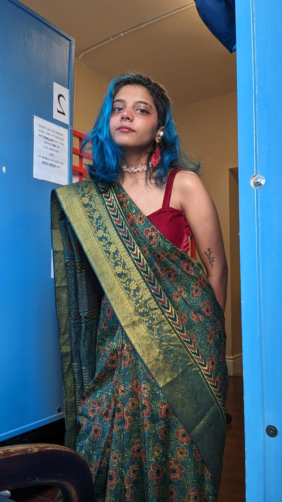

Game Developer · UX Designer
Unity game developer with 4+ years of experience building therapeutic and narrative games — from a clinically-validated mobile app with thousands of users, to narrative experiences showcased at GDC, Play NYC, and Wonderville.
Based in Brooklyn, born and raised in India. Playing with visual storytelling is at the heart of everything I make. My work focuses on accessibility and representation — whether it's a fast-paced video game or a slow-burn board game, I like to push the boundaries of what's possible.